Dr. Sriharsha Ajjur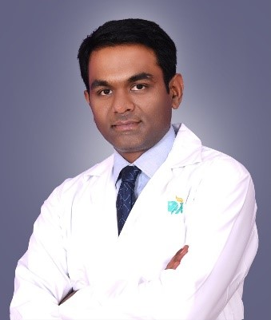Consultant Urologist, Andrologist and Transplant Surgeon Dr Sriharsha Ajjur received his medical degree from the Rajiv Gandhi University of Health Sciences, Karnataka a premier Health Science University in India. He completed his General surgery training |
Dr. Deepak Bolbandi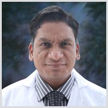MBBS, MS(Gen Surgery), Mch(Urology). DNB(Urology), Fellowship Singapore Urological Association (Laser, Laparoscopy and Robotics) Dr.Deepak Bolbandi , a Senior Consultant Urologist and Transplant Surgeon is working with Apollo Hospitals Group since 10 years. He is rated among the best |
Dr. Geetha N Gowdar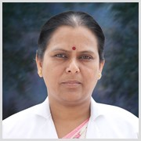Senior consultant and Head, Transfusion Medicine Quality manager for Laboratory services Dr. Geetha N Gowdar is a Senior Consultant in the department of Transfusion Medicine at Apollo Hospitals, Bangalore. |
Dr. K.Subramanayam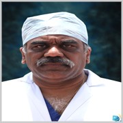Head and Coordinator – Department of Anesthesia Dr. Subramaniam has a vast experience of over two decades in the field of Anesthesia and Intensive care. |
Dr M S Kumaraswamy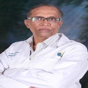Senior Consultant, Anesthesia Dr. Kumaraswamy has a rich experience of over a decade in the field of Anesthesia, currently he is working as Senior consultant at Apollo Hospitals Bangalore |
Dr. Mehta Y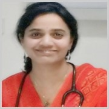Consultant, Phoenix Health Check Dr. Mehta Y is a Consultant Physician in the department of Preventive Health Checks. She is a doctor with a post-graduate degree in Family Medicine |
Dr. Nagaraj S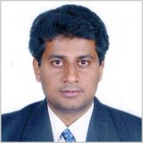Senior Consultant – Internal Medicine Dr. Nagaraj S is a Senior Consultant Physician in the department of General Medicine, practicing for more than 15 years |
Dr. P. P Bapsy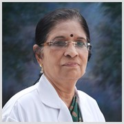Senior Consultant and Head of Department, Oncology Dr. Bapsy is an expert Oncologist of International repute and is the first women in India to obtain D.M in Medical Oncology. Her expertise in treating |
Dr. B Krishnamoorthy Reddy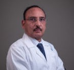Senior Consultant and Chief Radiation Oncologist Dr. B. K. M Reddy is a dynamic doctor, having a vast experience of over 30 years. He established the department of Radiation Oncology at Apollo Hospitals, Bangalore. He has also served as a professor and HOD before joining Apollo. |
Dr. M. Chandrashekar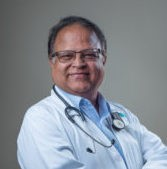Senior Consultant-Surgical Oncology Dr Chandrashekar is a Senior Surgical Oncologist with over 3 decades of experience in the management of variety of solid tumors involving |
Dr.(Prof) Satish Nair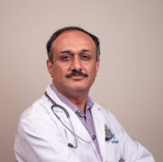MBBS, MS (ENT), Post Doctoral training in Head and Neck Oncology Sr Consultant - ENT, Head & Neck Surgery Dr Satish’s approach to the profession is simple as he has committed himself to a lifetime of clinical excellence. He treats patients with utmost compassion |
Dr. Sunil Narayan Dutt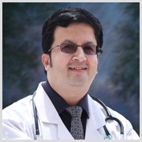M.S (ENT), D.N.B (ORL), D.L.O., RCS (Eng), FRCS ED, FRCS (ORL-HNS) , PhD , Clinical Fellowship – Otology/Neurotology Senior Consultant and Cochlear Implant Surgeon Dr. Sunil Narayan Dutt is a world renowned Otolaryngologist with over two decades of experience in ENT. He was the first Coordinator and Head of the Department of ENT in Apollo Bangalore. |
Dr. Satish Babu KMBBS, DLO, MS(ENT) Senior Consultant - ENT Surgeon Dr. Satish Babu is Experienced in all types of Endoscopic Nasal/ Sinus Surgeries and Microscopic ear/Laryngeal Surgeries |
Dr. Shalini Shetty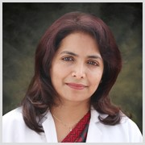MBBS, MS, FRCS Senior Consultant Ophthalmologist Dr. Shalini Shetty is an expert in the field of Ophthalmology. A senior Consultant in the department of Ophthalmology, she is a thespian having 16 years of experience in the field |
Dr. Rajeeva Moger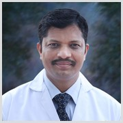Senior Consultant,Physician Dr. Rajeeva Moger is a senior consultant physician in the department of Internal Medicine. His Compassion, excellent bedside manners, clinical judgment, skills and attitude have gained him recognition in the field of medicine |
Dr. Kalpana Janardhan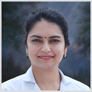Senior Consultant Physician Dr. Kalpana Janardhan, is a Senior Consultant in the department of General Medicine. After having practiced in USA for more than six years, she came to India to offer her services and is currently with Apollo Hospitals, Bangalore. |
Dr. Jyothsna Krishnappa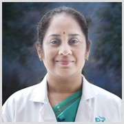Senior Consultant Physician Dr. Jyothsna Krishnappa is a senior consultant in the Department of Internal Medicine at Apollo Hospitals, Bangalore. She is an expert in a wide spectrum of clinical problems & plays a leading role in managing urgent and emergency patients. |
Dr. B.S.Ramesh. , Lt.Col. (Rtd).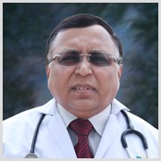Senior Consultant Physician Dr. Ramesh B.S is a senior consultant in internal medicine. He has gained expertise in this field through an illustrious career spanning more than three decades. |
Dr. Malla Reddy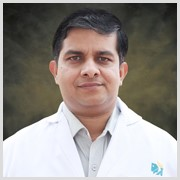Consultant Physician Dr. Malla Reddy , a proficient name in this field has vast experience. |
Dr. Sathyaki Purushotam Nambala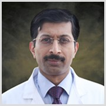Senior Consultant, Cardio-Thoracic and Vascular Surgery Dr Sathyaki Nambala is one of the leading authorities in the Country in the treatment of heart, lung and vascular surgery. He is the Asia’s first Totally Endoscopic Cardiac Keyhole surgeon and first to start Robotic Heart Surgeon Program in India. |
Dr. B Ramesh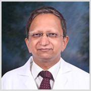Senior Consultant, Interventional Cardiology Dr. B Ramesh is the leading cardiologist in the country, having 25 years of experience. He is instrumental in bringing department of Cardiology to a world class standard. |
Dr. Girish B Navasundi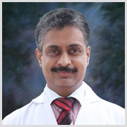Senior Consultant, Interventional Cardiology Dr. Navasundi is working as a Consultant in the department of Cardiology at Apollo. He has extensive experience of several years in the field of Cardiology. |
Dr. Ramesh Sungal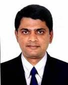MBBS, MD-Pediatrics, Fellowship in Pediatric Emergency Senior Consultant Dr Ramesh Sungal is a well known pediatrician in Bengaluru for more than a decade. He has worked in premier institutes in Bengaluru before joining Apollo Hospital |
Dr. Radha Krishna Hegde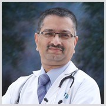Senior Consultant & Coordinator Dr. Hedge has vast experience in the field of Pediatric and is working as a senior Consultant & coordinator. |
Dr.Prashanth .S.Urs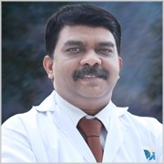MBBS,DNB (Pediatrics), DCH,Fellowship in Neonatology (Australia) Sr.Consultant Neonatologist & Pediatrician Dr. Prashanth has more than 15years of Teaching and clinical experience in Neonatology and Pediatrics. |
Dr. Sumant Mantri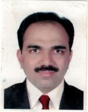Senior Consultant, Pulmonary and Sleep Medicine Dr. Sumant Mantri is a Senior Consultant, Pulmonary & Sleep Medicine at Apollo Hospitals Banerghatta Road – Bangalore. He Graduated from Pune University in 1995. |
Dr. Ravindra M. Mehta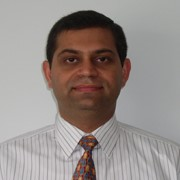Senior Consultant, Pulmonology, Interventional Pulmonology and Critical Care Medicine Dr. Ravindra Mehta is an established clinician, researcher, and a teacher in the field of Pulmonology (Respiratory/Chest Medicine), Critical care (Intensive Care) and Sleep Disorders Medicine |
Dr. Dwarakanath C.S.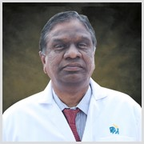Consultant, Endocrinology Dr. Dwarakanath C.S. is a highly skilled doctor, having many years of experience in Endocriology. |
Dr. Sriharsha AjjurConsultant Urologist, Andrologist and Transplant Surgeon Dr Sriharsha Ajjur received his medical degree from the Rajiv Gandhi University of Health Sciences, Karnataka a premier Health Science University in India. He completed his General surgery training |
Dr. Deepak BolbandiMBBS, MS(Gen Surgery), Mch(Urology). DNB(Urology), Fellowship Singapore Urological Association (Laser, Laparoscopy and Robotics) Dr.Deepak Bolbandi , a Senior Consultant Urologist and Transplant Surgeon is working with Apollo Hospitals Group since 10 years. He is rated among the best |
Dr.(Prof)V Sreedhar Reddy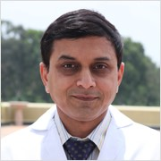MBBS, MS, MCh(Urology), DNB(Urology), MNAMS(Urology), FRTS, FIMS Senior Consultant, Urologist and Kidney transplant surgeon Dr. V. Sreedhar Reddy a leading name in the department of Urology. Has over twelve years of experience in this field. He aims to bring Apollo urology department on the world map |